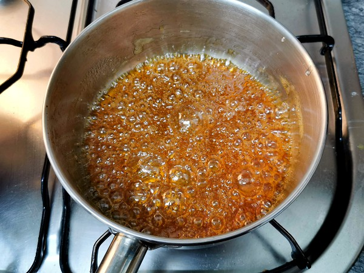
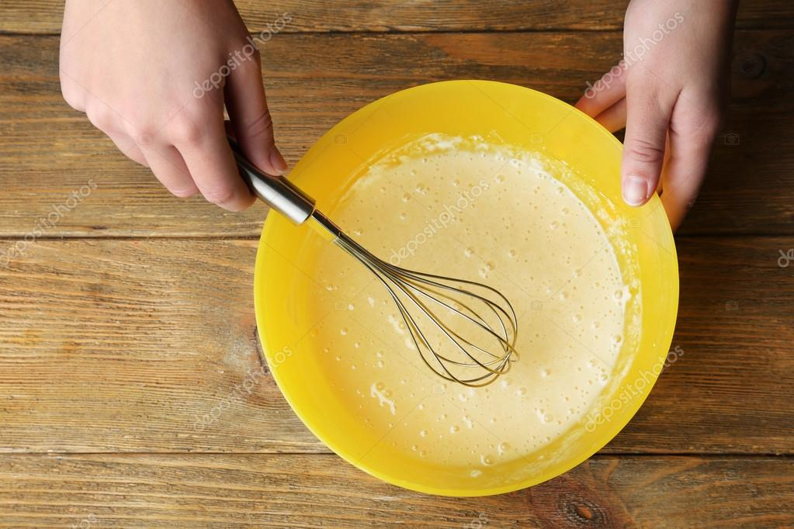

Regresar al menú
Flan
Índice de contenidos
Ingredientes
Para el flan
- 4 huevos
- 500 ml (2 tazas) de leche
- 100 g (½ taza) de azúcar
- 1 cucharadita de esencia de vainilla
Para el caramelo
- 100 g (½ taza) de azúcar
- 2 cucharadas de agua
Paso a paso
- Preparar el caramelo:

- En una sartén o cacerola pequeña, coloca el azúcar y el agua.
- Calienta a fuego medio sin revolver hasta que tome color dorado (no dejes que se queme).
- Vierte el caramelo en el fondo del molde o en flaneras individuales, girando para cubrir bien la base.
- Preparar la mezcla del flan:

- En un bol, bate los huevos con el azúcar.
- Agrega la leche y la vainilla, y mezcla bien (no hace falta batir mucho, solo integrar).
- Cocinar el flan:

- Vierte la mezcla sobre el caramelo ya endurecido.
- Cocina a baño maría: coloca el molde dentro de una fuente con agua caliente y hornea a 180 °C por unos
45-50 minutos, hasta que cuaje (puedes pinchar con un cuchillo; debe salir limpio).
- Servir:

- Deja enfriar a temperatura ambiente y luego refrigera al menos 2 horas.
- Desmolda pasando un cuchillo por los bordes y ¡a disfrutar!
Resultado final

Volver a el inicio